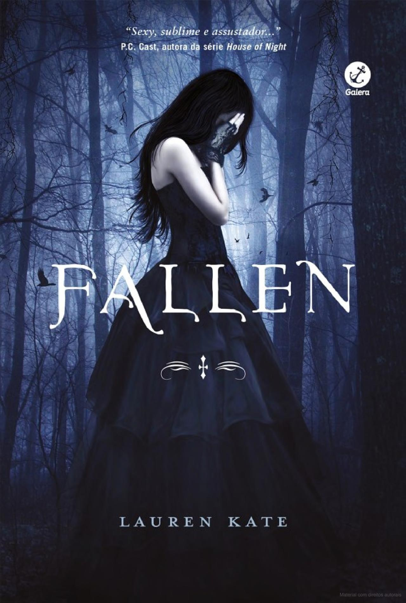

Fallen - O Começo de Tudo
"Mas o Paraíso está trancado e enclausurado...
Precisamos fazer a jornada ao redor do mundo
Para ver se uma porta dos fundos talvez esteja aberta.
Fallen é o primeiro livro da coleção, uma mistura de mistério com rebeldia. Tem o romance, mas nesta fase é comum ficar indecisa sobre quem a Luce deveria ficar: Cam, o Tudo-de-Bom, ou Daniel, o Gatão-e-Misterioso? Também tem a garota que parecia ter saído de um conto de fadas, Gabbe. O ranço que senti da perfeição que ela passava, ou Ariane, a amiga louca de Luce. Qualquer um gostaria de ser amigo dessas duas.
Em minha humilde opinião, é um dos melhores livros desta coleção. Você termina com tantas dúvidas e curiosidades, com um gostinho de "quero mais".